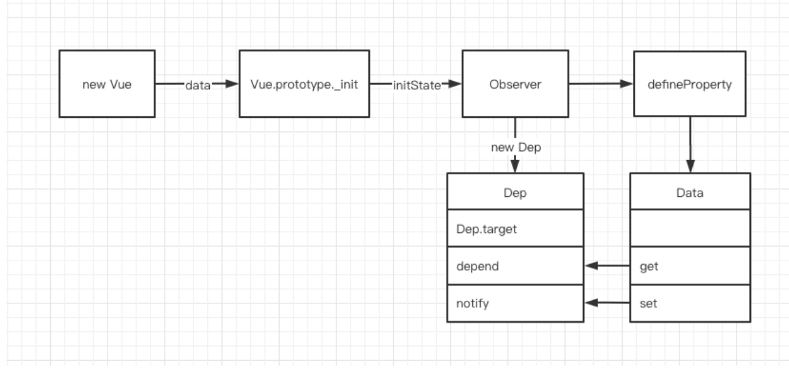
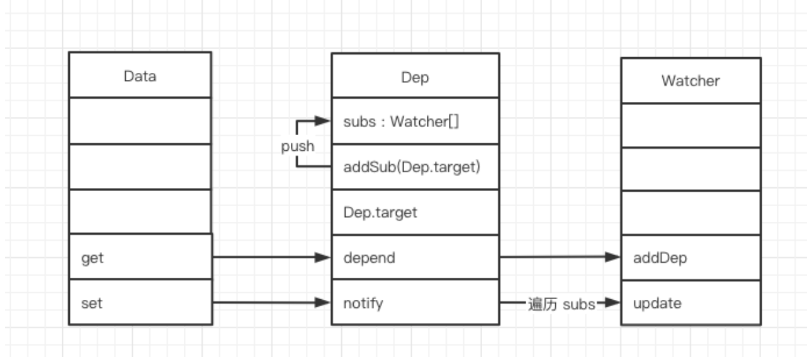
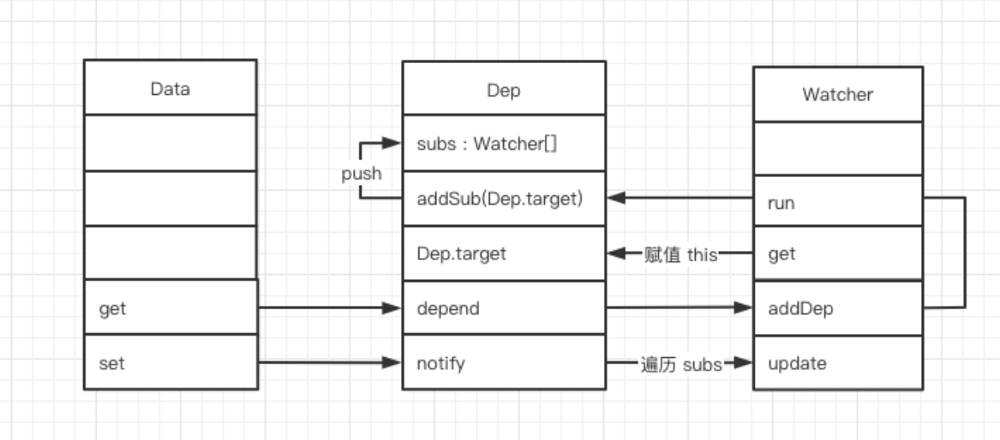
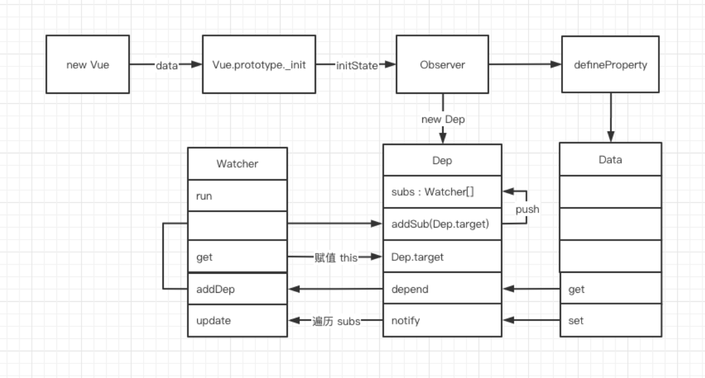
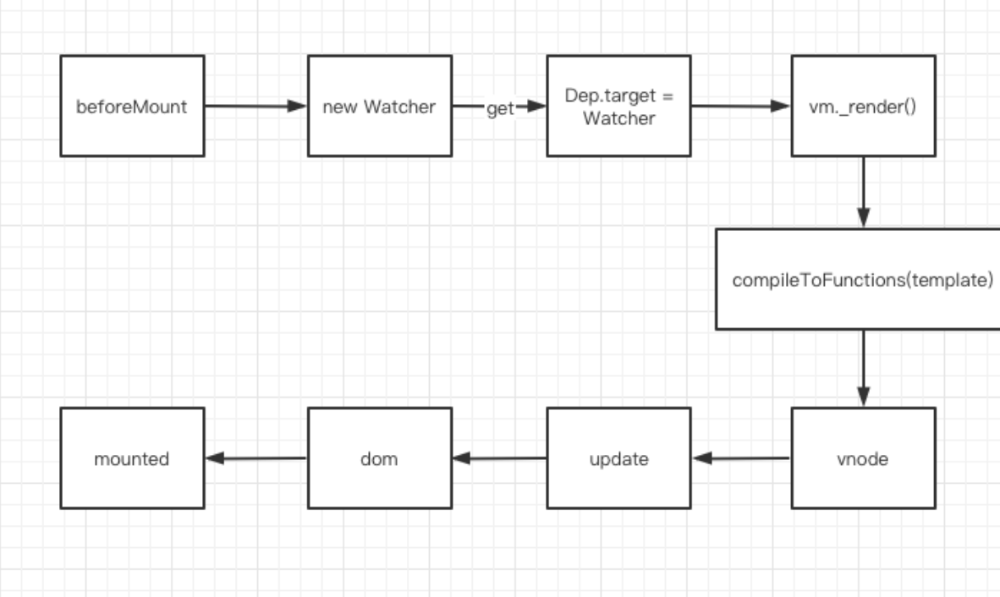
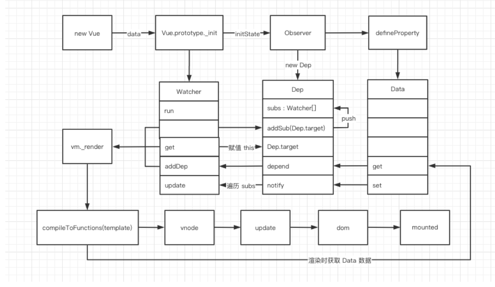
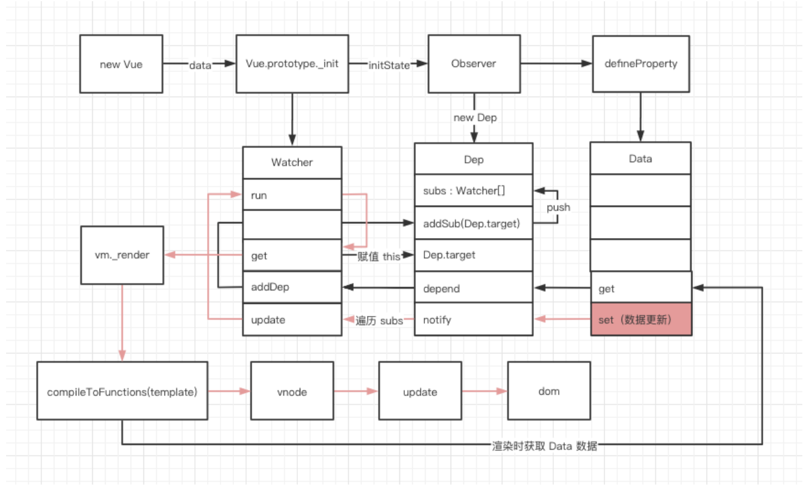
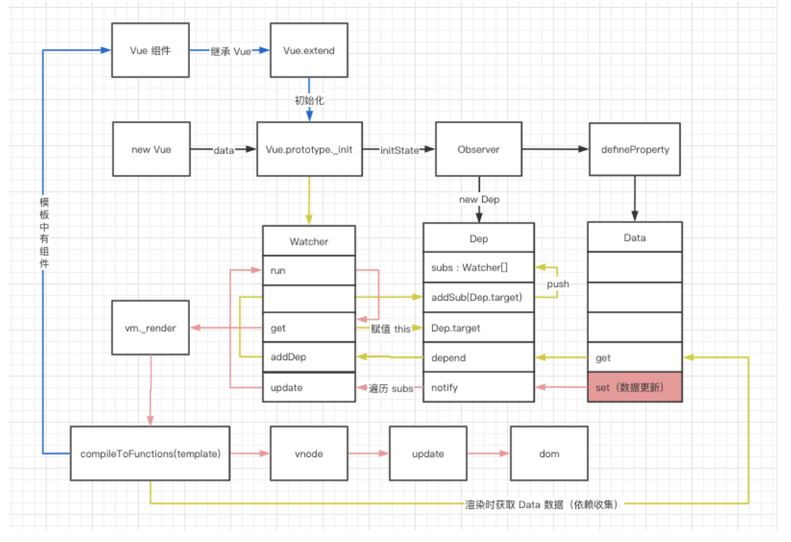
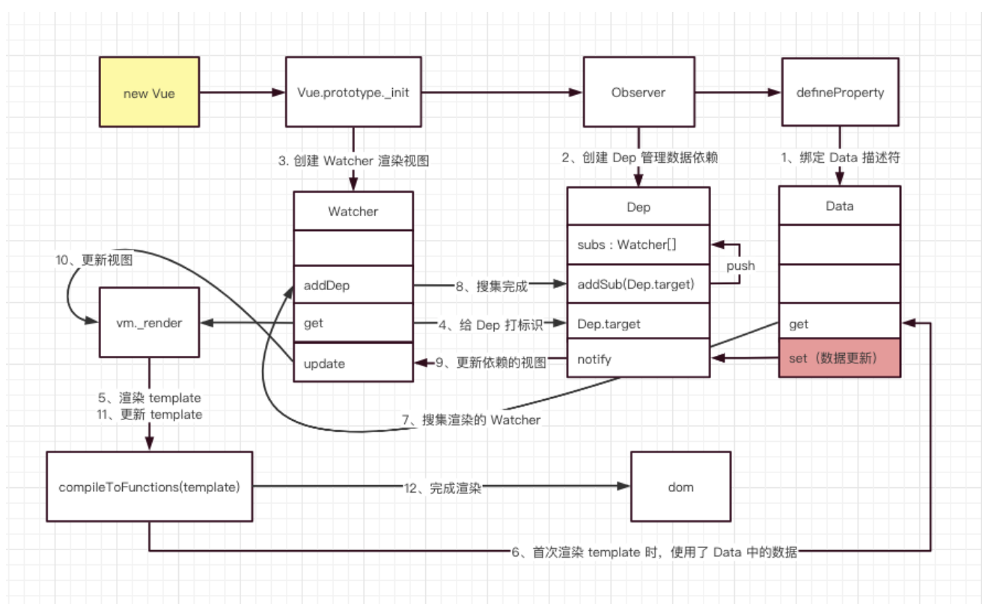

# Vue 初始化
先从最简单的一段 Vue 代码开始：
<template>
<div>
{{ message }}
</div>
</template>
<script>
new Vue({
data() {
return {
message: "hello world",
};
},
});
</script>
- 这段代码很简单，最终会在页面上打印一个 hello world，它是如何实现的呢？
- 我们从源头：new Vue 的地方开始分析。
// 执行 new Vue 时会依次执行以下方法
// 1. Vue.prototype._init(option)
// 2. initState(vm)
// 3. observe(vm._data)
// 4. new Observer(data)
// 5. 调用 walk 方法，遍历 data 中的每一个属性，监听数据的变化。
function walk(obj) {
const keys = Object.keys(obj);
for (let i = 0; i < keys.length; i++) {
defineReactive(obj, keys[i]);
}
}
// 6. 执行 defineProperty 监听数据读取和设置。
function defineReactive(obj, key, val) {
// 为每个属性创建 Dep（依赖搜集的容器，后文会讲）
const dep = new Dep();
// 绑定 get、set
Object.defineProperty(obj, key, {
get() {
const value = val;
// 如果有 target 标识，则进行依赖搜集
if (Dep.target) {
dep.depend();
}
return value;
},
set(newVal) {
val = newVal;
// 修改数据时，通知页面重新渲染
dep.notify();
},
});
}
数据描述符绑定完成后，我们就能得到以下的流程图：

- 图中我们可以看到，Vue 初始化时，进行了数据的 get、set 绑定，并创建了一个 Dep 对象。
- 对于数据的 get、set 绑定我们并不陌生，但是 Dep 对象什么呢？
- Dep 对象用于依赖收集，它实现了一个发布订阅模式，完成了数据 Data 和渲染视图 Watcher 的订阅，我们一起来剖析一下。
class Dep {
// 根据 ts 类型提示，我们可以得出 Dep.target 是一个 Watcher 类型。
static target: ?Watcher;
// subs 存放搜集到的 Watcher 对象集合
subs: Array<Watcher>;
constructor() {
this.subs = [];
}
addSub(sub: Watcher) {
// 搜集所有使用到这个 data 的 Watcher 对象。
this.subs.push(sub);
}
depend() {
if (Dep.target) {
// 搜集依赖，最终会调用上面的 addSub 方法
Dep.target.addDep(this);
}
}
notify() {
const subs = this.subs.slice();
for (let i = 0, l = subs.length; i < l; i++) {
// 调用对应的 Watcher，更新视图
subs[i].update();
}
}
}
根据对
Dep的源码分析，我们得到了下面这张逻辑图：

了解 Data 和 Dep 之后，我们来继续揭开 Watcher 的面纱。
class Watcher {
constructor(vm: Component, expOrFn: string | Function) {
// 将 vm._render 方法赋值给 getter。
// 这里的 expOrFn 其实就是 vm._render，后文会讲到。
this.getter = expOrFn;
this.value = this.get();
}
get() {
// 给 Dep.target 赋值为当前 Watcher 对象
Dep.target = this;
// this.getter 其实就是 vm._render
// vm._render 用来生成虚拟 dom、执行 dom-diff、更新真实 dom。
const value = this.getter.call(this.vm, this.vm);
return value;
}
addDep(dep: Dep) {
// 将当前的 Watcher 添加到 Dep 收集池中
dep.addSub(this);
}
update() {
// 开启异步队列，批量更新 Watcher
queueWatcher(this);
}
run() {
// 和初始化一样，会调用 get 方法，更新视图
const value = this.get();
}
}
源码中我们看到，Watcher 实现了渲染方法 _render 和 Dep 的关联， 初始化 Watcher 的时候，打上 Dep.target 标识，然后调用 get 方法进行页面渲染。加上上文的 Data，目前 Data、Dep、Watcher 三者的关系如下：

我们再拉通串一下整个流程：Vue 通过 defineProperty 完成了 Data 中所有数据的代理，当数据触发 get 查询时，会将当前的 Watcher 对象加入到依赖收集池 Dep 中，当数据 Data 变化时，会触发 set 通知所有使用到这个 Data 的 Watcher 对象去 update 视图。
目前的整体流程如下：

上图的流程中 Data 和 Dep 都是 Vue 初始化时创建的，但现在我们并不知道 Wacher 是从哪里创建的，带着这个问题，我们接着往下探索。
# 模板渲染
上文中，我们分析了初始化 Vue 过程中处理数据的部分，接下来，我们分析一下数据渲染的部分。
其实 new Vue 执行到最后，会调用 mount 方法，将 Vue 实例渲染成 dom 。
// new Vue 执行流程。
// 1. Vue.prototype._init(option)
// 2. vm.$mount(vm.$options.el)
// 3. render = compileToFunctions(template) ，编译 Vue 中的 template 模板，生成 render 方法。
// 4. Vue.prototype.$mount 调用上面的 render 方法挂载 dom。
// 5. mountComponent
// 6. 创建 Watcher 实例
const updateComponent = () => {
vm._update(vm._render());
};
// 结合上文，我们就能得出，updateComponent 就是传入 Watcher 内部的 getter 方法。
new Watcher(vm, updateComponent);
// 7. new Watcher 会执行 Watcher.get 方法
// 8. Watcher.get 会执行 this.getter.call(vm, vm) ，也就是执行 updateComponent 方法
// 9. updateComponent 会执行 vm._update(vm._render())
// 10. 调用 vm._render 生成虚拟 dom
Vue.prototype._render = function (): VNode {
const vm: Component = this;
const { render } = vm.$options;
let vnode = render.call(vm._renderProxy, vm.$createElement);
return vnode;
};
// 11. 调用 vm._update(vnode) 渲染虚拟 dom
Vue.prototype._update = function (vnode: VNode) {
const vm: Component = this;
if (!prevVnode) {
// 初次渲染
vm.$el = vm.__patch__(vm.$el, vnode, hydrating, false);
} else {
// 更新
vm.$el = vm.__patch__(prevVnode, vnode);
}
};
// 12. vm.__patch__ 方法就是做的 dom diff 比较，然后更新 dom，这里就不展开了。
看完 Vue 模板渲染的过程，我们可以得到如下的流程图：

到这里，我们就知道了 Watcher 其实是在 Vue 初始化的阶段创建的，属于生命周期中 beforeMount 的位置创建的，创建 Watcher 时会执行 render 方法，最终将 Vue 代码渲染成真实的 DOM。
我们再将之前的流程整合一下，就能得到以下的流程：

- 上图分析了 Vue 初始化到渲染 DOM 的整个过程，最后我们再分析一下，当数据变化时，Vue 又是怎么进行更新的？
- 其实，在上图也能看出，在 Data 变化时，会调用 Dep.notify 方法，随即调用 Watcher 内部的 update 方法，此方法会将所有使用到这个 Data 的 Watcher 加入一个队列，并开启一个异步队列进行更新，最终执行 _render 方法完成页面更新。
整体的流程如下：

好了，探索到这里，Vue 的响应式原理，已经被我们分析透彻了，如果你还没有明白，不妨再细品一下上图。
# 组件渲染
Vue 组件又是怎么渲染的呢？
// 从模板编译开始，当发现一个自定义组件时，会执行以下函数
// 1. compileToFunctions(template)
// 2. compile(template, options);
// 3. const ast = parse(template.trim(), options)
// 4. const code = generate(ast, options)
// 5. createElement
// 6. createComponent
export function createComponent(
Ctor: Class<Component> | Function | Object | void,
data: ?VNodeData,
context: Component,
children: ?Array<VNode>,
tag?: string
): VNode | Array<VNode> | void {
// $options._base 其实就是全局 Vue 构造函数，在初始化时 initGlobalAPI 中定义的：Vue.options._base = Vue
const baseCtor = context.$options._base;
// Ctor 就是 Vue 组件中 <script> 标签下 export 出的对象
if (isObject(Ctor)) {
// 将组件中 export 出的对象，继承自 Vue，得到一个构造函数
// 相当于 Vue.extend(YourComponent)
Ctor = baseCtor.extend(Ctor);
}
const vnode = new VNode(`vue-component-${Ctor.cid}xxx`);
return vnode;
}
// 7. 实现组件继承 Vue，并调用 Vue._init 方法，进行初始化
Vue.extend = function (extendOptions: Object): Function {
const Super = this;
const Sub = function VueComponent(options) {
// 调用 Vue.prototype._init，之后的流程就和首次加载保持一致
this._init(options);
};
// 原型继承，相当于：Component extends Vue
Sub.prototype = Object.create(Super.prototype);
Sub.prototype.constructor = Sub;
return Sub;
};
看完组件渲染的源码后，结合上文，重新整理了一张流程图，图中的蓝色部分就是渲染组件的过程。

好了，现在是真的结束了，最终的流程图就是上面的这一张图。

# 总结
本文从源码的角度，介绍了 Vue 响应式原理，来简单回顾一下吧。
- 从 new Vue 开始，首先通过 get、set 监听 Data 中的数据变化，同时创建 Dep 用来搜集使用该 Data 的 Watcher。
- 编译模板，创建 Watcher，并将 Dep.target 标识为当前 Watcher。
- 编译模板时，如果使用到了 Data 中的数据，就会触发 Data 的 get 方法，然后调用 Dep.addSub 将 Watcher 搜集起来。
- 数据更新时，会触发 Data 的 set 方法，然后调用 Dep.notify 通知所有使用到该 Data 的 Watcher 去更新 DOM。